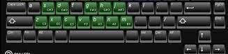

Adivinhe a nota
Para começar clique em próximo
Acertos: 0
Erros: 0
0%
Clave:
Clave de Sol
Clave de Fá
Clave de Dó
Nota MIDI mínima:
10
Nota MIDI máxima:
100
Mostrar partitura
Tocar som
Atalhos
notas musicais

Outras:
Seta direita : próxima pergunta
R : Repete o som da última nota